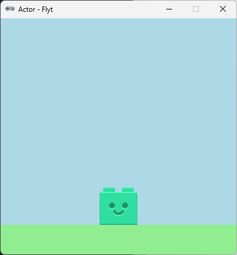

Actor sprite
Grafisk element til vores Actor

Vi vil i det følgende lave forskellige ting med Pygame Zeros Actor objektet.
Gennem kode eksempler får vi en bedre forståelse af mulighederne med en Actor.
Vi bruger dette lille program som en start
WIDTH = 400
HEIGHT = 400
TITLE = "Actor - Flyt"
player = Actor("brick_face")
player.midbottom = WIDTH/2,(HEIGHT-50)
def draw():
screen.clear()
screen.fill("lightblue")
ground()
player.draw()
def ground():
ground = Rect((0,350),(WIDTH,HEIGHT))
screen.draw.filled_rect(ground, color="lightgreen")
Gem kode filen som "actor_move.py". Afprøv at din kode virker inden du går videre
Vi kan flytte vores Actor ved at ændre dens x værdi.
For at gøre det tilføjer vi et tjek om venstre eller højre piletast er trykket ned.
Det før vi i dette eksempel i update() funktionen.
def update():
if keyboard.left:
player.x -= 1
if keyboard.right:
player.x += 1
Gem og afprøv
Tilføj denne kode for at få actor til at springe "op" når der trykkes på mellemrumstasten.
if keyboard.space:
player.y -= 10
Afprøv. Mangler der noget?
Da vi bevægede os sidevers var der ingen problem, men nu da vi vil hoppe skal vi gerne have actor til at falde
ned igen.
Det kan vi gøre ved at lave et tjek om player y værdi er større en start positionen.
hvis den er juster vi y værdien.
if player.y <= 350-player.height/2:
player.y += 3
Afprøv.
Når man bevæger sig vil man måske gerne have bevægelsen til at minde om at løb.
så når man holder op med at trykke til siden skal farten gradvist aftage.
vi kan op nå den effekt hvis vi indføre et par nye variabler til at styre vores ændring i player.x
i stedet for at ændre player.x med en fast værdi
start med at tilføje to nye variabler
player.vx = 0
player.vy = 0
Ændre nu første del af update()
def update():
if keyboard.left:
player.vx -= 1
if keyboard.right:
player.vx += 1
I den næste kode tilskriver vi ændring vx til player.x
så længe man holder knappen nede vil vx blive ved med at være 1
men når vi slipper knappen vil vx blive mindre hvergang update() køre.
player.x += player.vx
player.vx *= 0.8
Afprøv og prøv med andre værdier end 0.8
Selv om det ser ud som om actor stopper.
Så prøve at tilføj denne linje til draw() funktionen.
så kan vi se den aktuelle værdi er vx
screen.draw.text(str(player.vx),(10,10))
Vi kan se at vx tager meget lang tid om at blive 0
Det kan vi ændre på ved at tilføje et lille tjek om vx er mellem et bestemt interval.
Hvis den er, så sætter vi vx til 0
if player.vx <= -0.01 or player.vx > 0.01:
player.vx *= 0.8
else:
player.vx = 0